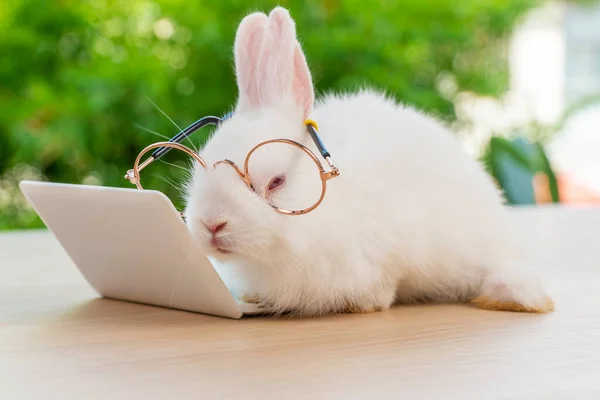

¡Nueva Página Web!
¡Nos renovamos! Estamos muy emocionados de anunciar que hemos realizado una serie de mejoras significativas en nuestra página web. Gracias a los incansables esfuerzos y la dedicación de nuestro talentoso equipo de programadores, hemos logrado diseñar una plataforma moderna y eficiente que agiliza notablemente la divulgación de información sobre conejos. Esta nueva versión de la página no solo es más rápida y fácil de navegar, sino que también ofrece una experiencia de usuario mucho más enriquecedora. Hemos incluido secciones detalladas con información actualizada y relevante sobre el cuidado, la alimentación y las características de diferentes razas de conejos. Nuestro objetivo es proporcionar recursos valiosos para todos los amantes de los conejos, desde dueños primerizos hasta expertos. Además, estamos muy orgullosos de presentar a nuestra nueva mascota oficial, Galleta. Este adorable conejo se ha convertido en la cara amigable de nuestra página y estamos seguros de que te encantará tanto como a nosotros. ¿Ya tuviste la oportunidad de conocer a Galleta? Hemos incluido fotos y una sección especial dedicada a sus aventuras y cuidados, para que puedas seguir de cerca su día a día. Esperamos que disfrutes de esta renovada experiencia y encuentres toda la información que necesitas para cuidar y conocer mejor a estos maravillosos animales. ¡Gracias por acompañarnos en esta nueva etapa!

 ¿Quieres asegurarte de que tu conejo se mantenga saludable y libre
de parásitos? En nuestro artículo, te ofrecemos una guía completa
sobre los cuidados básicos para prevenir ácaros en conejos. Desde
la higiene adecuada hasta la dieta balanceada y revisiones regulares,
encontrarás todos los consejos esenciales para mantener a tu mascota
feliz y saludable. ¡No te lo pierdas y descubre cómo brindarle el mejor
cuidado a tu conejo!
¿Quieres asegurarte de que tu conejo se mantenga saludable y libre
de parásitos? En nuestro artículo, te ofrecemos una guía completa
sobre los cuidados básicos para prevenir ácaros en conejos. Desde
la higiene adecuada hasta la dieta balanceada y revisiones regulares,
encontrarás todos los consejos esenciales para mantener a tu mascota
feliz y saludable. ¡No te lo pierdas y descubre cómo brindarle el mejor
cuidado a tu conejo!